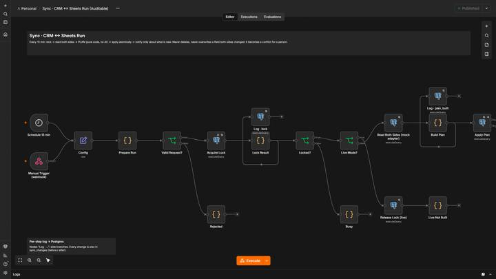
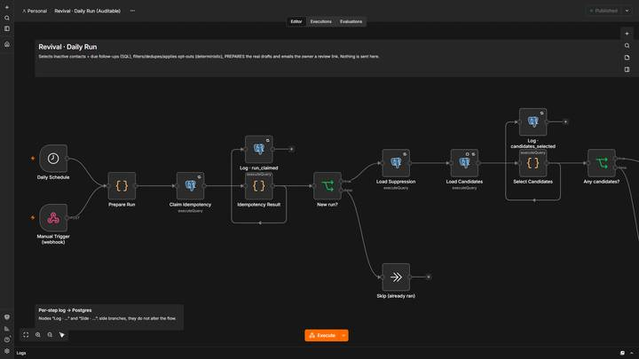
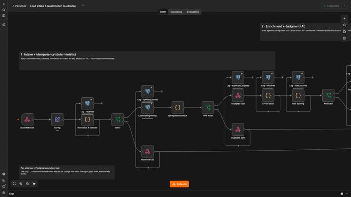
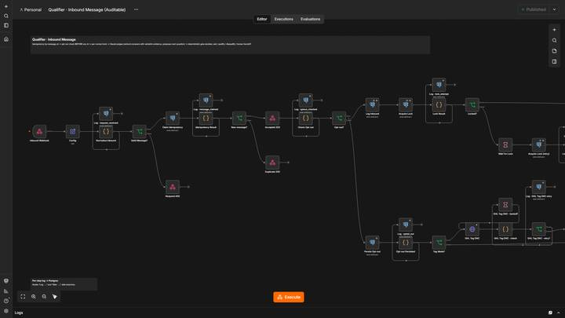
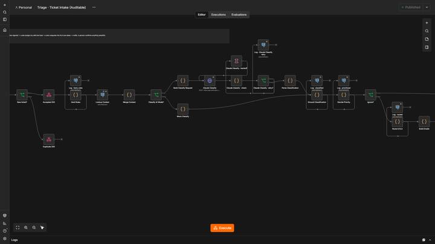
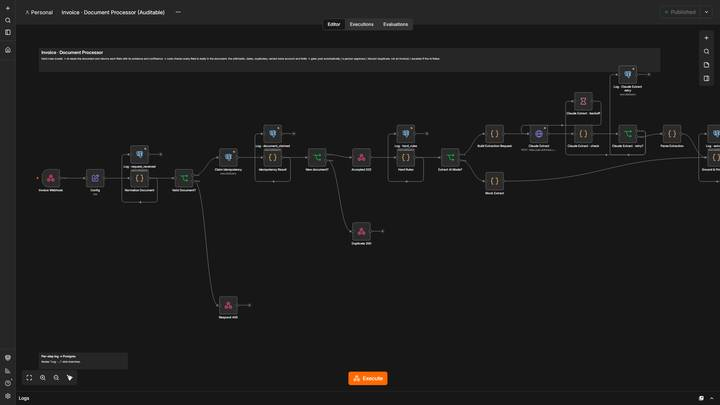

01
Your CRM and your spreadsheet, telling the same story.
CRM ↔ Sheets Sync: Two systems edited by different people merge without overwriting each other.
Built in n8n, Postgres and Claude. In each one, code makes the decisions and AI only reads, drafts and summarizes: what a model says is checked against evidence before anything moves.
Built and tested end to end with synthetic data in mock mode. Live accounts connect at the edges, and every system page says exactly what is still to wire up.

CRM ↔ Sheets Sync: Two systems edited by different people merge without overwriting each other.

Lead Revival: Every weekday it prepares one personalized draft per quiet contact.

Lead Intake & Reports: A form lead is validated, de-duplicated, enriched and scored by rules; AI only judges what rules can’t.

SMS Qualifier + Booking: A conversation takes a lead from “replied” to “appointment booked” and escalates to a person only when needed.

AI Support Ops: Tickets are classified, prioritized, assigned and put on SLA clocks by code; AI reads and drafts.

Invoice & Document Processor: AI reads the invoice and returns each field with the text it came from.
The same six practices run through all of them. They are the reason a system can be left running.
Send-and-wait approvals sit in front of the first message, the draft batch, the invoice. No clear answer means no.
Idempotency keys claimed atomically in Postgres: a retried webhook or a double click never repeats the work.
Unsubscribe words are caught by code before any model sees the message.
One row per step in Postgres, so any decision can be traced back to what the system saw.
Reports and summaries are computed from the tables. AI never writes a figure.
A global handler logs and emails every failure. Nothing fails silently, and a failed send retries on the next run.
The retry decision logic is unit-tested, and the failed-send retry was proven end to end (SMTP down, alert not recorded, delivered once after recovery). The backoff loop around real API calls has not run against live services yet.